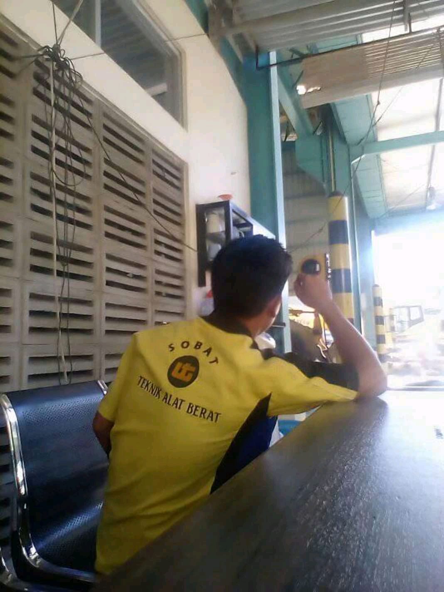
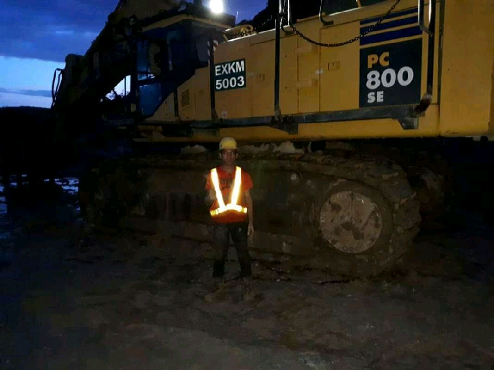

UT Manado

Atasi Trouble
2015-2018
Dasar-Dasar Teknik: Masa SMK
Perjalanan saya dimulai di SMK Teknik Alat Berat (2015-2018). Pada tahun 2017, saya berkesempatan menjalani PKL di PT United Tractors Tbk Manado sebagai Mekanik, di mana saya banyak belajar mengenai:
- Sistem alat berat dan komponennya
- Manajemen perawatan mesin
- Diagnosis dan perbaikan kerusakan
- Keselamatan kerja di bengkel alat berat
"Pengalaman PKL ini memberikan fondasi kuat tentang bagaimana teori diterapkan dalam praktik nyata di industri."